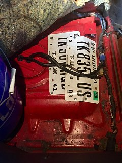

-
This has done this for awhile now, but today was worse. When I turn right and floor it, I get a bucking / jerking and have to let off. Turning left, it never does it. I was down to 5 gallons so I added 5 more and it stopped. This is repeatable.
The odd part today was it ran fine to my destination after I got gas (left or right turns flooring). Car sat for an hour and on my way home it died at idle at every stop. Outside of the idle issue, car ran great.
When I got home I hard wired fuel pump no change at idle. Also disconnected vacuum from FPR, no change. I have some other checks I need to do via FSM, just wondering what others thought. I need to do the fuel filter and Iâm going to add a FP gauge to check pressure.
The reason for thinking fuel pump is the turning right issue. That has always been weird to me, but repeatable. I might have junk in the tank too.
From reading other info on a failing pump, it seems the number one symptom is issues while driving. -
I would guess junk in the sediment filter. Maybe pull the fuel sender to inspect before needing to drop the entire tank.
84 AE/Shiro #683/Shiro #820/84 Turbo -
might be worth changing the fuel filter since it's cheap and easy to do. Also you dont have to drop the tank to get to the fuel pump…
if you're gonna be dumb you gotta be tough -
Thanks guys. Yeah I had thought of cutting a small hole too. I was going to grab an extra fuel sending unit cover to cover up the hole. -
Is there a certain secret to getting the sending unit out for digital can type? Ive pulled two now first slid right out and 2nd was a bear.Originally posted by Z_Karma View Post -
I've pulled a few and some are indeed more difficult than others.
I pull and twist if a few times before feigning on giving up. I then walk around the car once to lull it into a less defensive state then.. jump it (battle screech optional),
yanking quickly with an uncomfortable force on the delicate part where the wires are soldered on and it pops right out. That usually does the trick.
84 AE/Shiro #683/Shiro #820/84 Turbo -
LOL that was great! I feel you.

Copyright © 2006–. All rights reserved. Privacy Policy